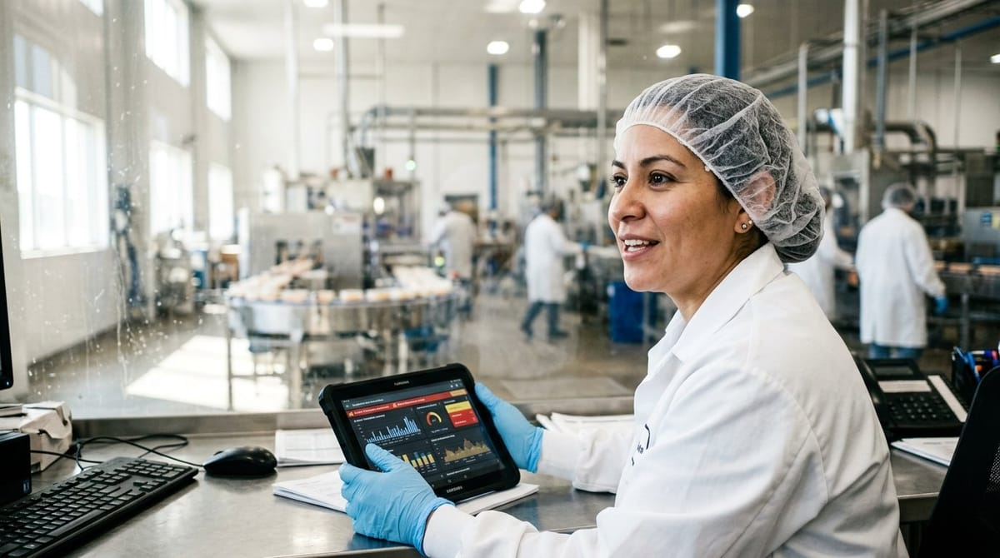

Inteligencia artificial en el control de calidad

Inteligencia artificial en el control de calidad
La inteligencia artificial en el control de calidad alimentaria ha dejado de ser una promesa de futuro para convertirse en una herramienta presente en muchas plantas y departamentos de calidad. No hablamos de robots ni de ciencia ficción: hablamos de sistemas capaces de clasificar incidencias, detectar patrones anómalos y generar alertas antes de que un problema menor se convierta en una crisis. Para los responsables de calidad de la industria agroalimentaria, entender qué puede hacer la IA hoy, y qué límites tiene todavía, es esencial para tomar decisiones bien informadas.
Dónde encaja hoy la IA en el control de calidad alimentaria
La inteligencia artificial aplicada a la calidad alimentaria no llega para reemplazar procesos enteros de un día para otro. Su valor más inmediato está en tres áreas muy concretas: la clasificación automática de incidencias, la generación de alertas tempranas y la detección de patrones que el ojo humano difícilmente captaría entre cientos de registros.
Cuando una línea de producción genera decenas de registros diarios, es fácil que una desviación recurrente pero leve quede sepultada bajo el volumen de datos. Un sistema con IA puede analizar ese histórico en segundos, identificar que cada martes por la tarde se produce una desviación de temperatura en un punto concreto, y lanzar una alerta antes de que el problema escale. Esto es precisamente lo que se explora en profundidad en el artículo sobre cómo detectar patrones de incidencias, donde se describe cómo pasar de una gestión reactiva a una gestión anticipada.
Otra área donde la IA está demostrando un valor claro es en la ia trazabilidad alimentaria. Al cruzar datos de lotes, proveedores, condiciones de almacenamiento y resultados de auditorías, los sistemas inteligentes pueden vincular automáticamente una incidencia a su posible origen, acortando drásticamente el tiempo de investigación. Esto no solo mejora la eficiencia, sino que también refuerza el cumplimiento de las obligaciones de trazabilidad que establece el Reglamento (CE) n.º 178/2002 (Reglamento [CE] 178/2002, 2002), que obliga a los operadores alimentarios a poder identificar cualquier sustancia incorporada en sus productos.
En resumen, la IA encaja hoy en el control de calidad como una capa de análisis y automatización que trabaja sobre los datos que ya tienes, haciéndolos más útiles y accionables.
Lo que la IA todavía no sustituye: criterio del responsable de calidad y verificación humana
Seamos honestos: la inteligencia artificial tiene límites reales, y en el sector agroalimentario ignorarlos puede salir caro. Por muy sofisticado que sea un modelo, no puede reemplazar el juicio experto de un responsable de calidad con años de experiencia en planta.
La IA trabaja con datos históricos y patrones conocidos. Cuando aparece una situación nueva, atípica o que depende de factores contextuales difíciles de digitalizar (una negociación con un proveedor, un cambio de procedimiento reciente, una observación organoléptica), el sistema puede fallar o simplemente no tener suficiente información para actuar. Ahí es donde la verificación humana resulta imprescindible.
Además, la responsabilidad legal y técnica de las decisiones de calidad siempre recae en personas. Automatizar no significa delegar la responsabilidad en un algoritmo. Significa liberar tiempo y atención para que el responsable de calidad pueda dedicarse a lo que realmente requiere su criterio: la toma de decisiones compleja, la comunicación con equipos y proveedores, y la mejora continua del sistema.
Otro aspecto crítico es la calidad del dato de entrada. La IA es tan buena como los datos que recibe. Si los registros están incompletos, mal estructurados o se introducen de forma inconsistente, el sistema generará resultados poco fiables. Por eso, antes de implementar cualquier solución de IA, conviene revisar y consolidar la base de datos de calidad.
Casos reales: buzones de avisos automatizados y generación asistida de incidencias
Uno de los casos de uso más extendidos y con mayor retorno inmediato es el de los buzones de avisos automatizados. Muchas empresas agroalimentarias reciben comunicaciones de incidencias por correo electrónico o formularios de diferentes canales: proveedores, operarios, clientes, laboratorios. Clasificar y priorizar manualmente esos avisos consume tiempo valioso.
Con IA, es posible analizar el texto de esos mensajes, clasificar la incidencia por tipo y gravedad, asignarla automáticamente al responsable correspondiente y generar un primer borrador de registro. El equipo de calidad recibe la incidencia ya organizada, con la información relevante destacada, y puede centrarse en validar y actuar en lugar de en tareas administrativas. Si quieres profundizar en cómo estructurar este tipo de flujos, el artículo sobre flujos de trabajo automatizados para asignar incidencias al responsable ofrece una guía práctica muy útil.
Otro caso real es la generación asistida de informes de incidencias. En lugar de redactar desde cero cada vez que se detecta una no conformidad, el sistema propone un borrador basado en los datos registrados: lote afectado, punto de control, desviación detectada, acciones previas similares. El responsable revisa, ajusta y valida. El ahorro de tiempo puede ser significativo, especialmente en empresas con un volumen alto de incidencias. Para ver cómo este enfoque se integra en la generación de informes periódicos, merece la pena leer el artículo sobre automatización de reportes de calidad.
Estos no son casos teóricos. Son funcionalidades que ya están disponibles en herramientas de gestión de calidad como Solved, diseñadas específicamente para la industria agroalimentaria.
Cómo empezar a usar IA en calidad sin comprometer la trazabilidad
Si estás considerando incorporar inteligencia artificial a tu sistema de calidad, la clave está en hacerlo de forma gradual, estructurada y con los controles adecuados. Aquí tienes un enfoque práctico para empezar:
1. Audita tus datos actuales. Antes de implementar cualquier solución, revisa el estado de tus registros. ¿Están digitalizados? ¿Son consistentes? ¿Están vinculados a lotes y puntos de control de forma clara? Sin una base de datos sólida, la IA no puede generar valor real.
2. Identifica un caso de uso concreto. No intentes automatizarlo todo a la vez. Empieza por un proceso con alto volumen de tareas repetitivas y bajo riesgo de error crítico: por ejemplo, la clasificación inicial de incidencias o la generación de borradores de informes.
3. Mantén siempre la validación humana. Cualquier acción generada por IA debe pasar por la revisión de un responsable antes de ejecutarse o registrarse como definitiva. Esto es especialmente importante para garantizar la integridad de la trazabilidad, que debe ser completa, verificable y auditabie en todo momento.
4. Mide el impacto. Define indicadores claros antes de empezar: tiempo de gestión de incidencias, tasa de errores en clasificación, tiempo de respuesta ante alertas. Medir te permitirá justificar la inversión y detectar áreas de mejora.
5. Elige herramientas diseñadas para el sector. Las soluciones genéricas de IA pueden no adaptarse bien a las particularidades regulatorias y operativas de la industria agroalimentaria. Busca software que ya integre la lógica de calidad alimentaria, los flujos de trabajo propios del sector y la compatibilidad con estándares como los reconocidos por ISO (ISO, s.f.).
La inteligencia artificial no es una solución mágica, pero sí es una ventaja competitiva real para los departamentos de calidad que sepan integrarla con criterio. El objetivo no es automatizar por automatizar, sino dedicar la inteligencia humana donde más importa.
Referencias
- Organizacion Internacional de Normalizacion. (s.f.). ISO 22000 e ISO 9001. https://www.iso.org/
- Reglamento (CE) n.o 178/2002 del Parlamento Europeo y del Consejo, de 28 de enero de 2002, por el que se establecen los principios y los requisitos generales de la legislacion alimentaria. (2002). https://eur-lex.europa.eu/eli/reg/2002/178/oj?locale=es